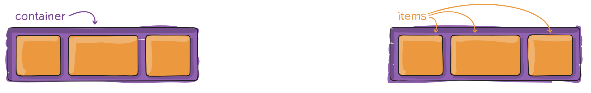

HB Blogging - Week 3
Septemeber 17th, 2021
This week we are learning about flex box in CSS which can be extremely challenging to understand but also extremely powerful once you can use if efficiently. Flex box has helped solve many problems such as aligning text or an image on a browser page or properly aligning several objects in a straight line. Although these sound like simple tasks, it was very complicated to do them correctly for a long time until flex box was introduced. My blog this week focuses on the basics of Flex Box and elaborates on the things that confused me even after reading the assigned chapter. I found a good website that highlighted the terminology that can be confusing and used tons of diagrams to explain the components better.
Flex Box Terminology
There is a lot of terminology associated with the flex box method. It is important to understand the terminology before trying to work with flex box CSS code in order to efficiently use all of its capabilities. When first looking at a flex box component, it is important to know what axis the components reside on. This is known as the main axis and can be either the horizontal or vertical axis depending on how you set it using the flex-direction property which will be explained in more detail below. The opposite axis is called the cross axis. The main start and main end refer to where the flex items begin and end on the main axis within the container. The cross start and cross end have the same idea as they refer to the beginning and end of where the flex items reside on cross axis. Lastly, we have the main size and the cross size. Each refer to either the height or width of the container depending on which is the main axis and which is the cross axis.
Flex Box Components and Their Properties
A flex box is composed of two pieces: a container and the flex items. There is typically only one container and then as many flex items are needed.

As shown in the image above, you can see that the container encompasses all the flex items into a single component in which the majority of the CSS formatting is applied to.
container {
display: flex;
flex-direction: row | row-reverse | column | column-reverse;
}